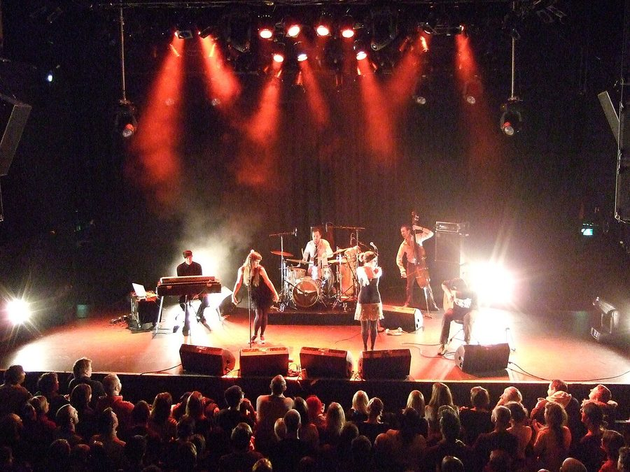

Nouvelle Vague & Softlightes secret gig tonight!



Well it’s not so secret now that we’ve let the cat outta the bag – but here’s a quick heads up for you. Nouvelle Vague and Softlightes will play a secret pre V fest gig in Sydney tonight.
The Modular crew are pleased to announce that in a a last minute, first in best dressed fashion French bossa brothers and sisters Nouvelle Vague and San Diego sunshine popsters Softlightes will take over Bar Broadway to deliver a night of lo-fi post punk pop and electronica.
Word has it that both Nouvelle Vague and Softlightes will be joined by an array of DJs and guests, so make sure you don’t miss out on this gig. Run! Don’t walk – RUN!
Modular presents
NOUVELLE VAGUE & SOFTLIGHTES
Friday March 30, 2007
Bar Broadway, Sydney
Doors at 8.
$15 tickets on the door.